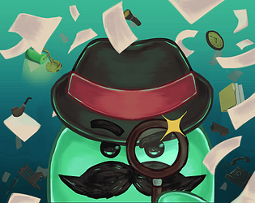
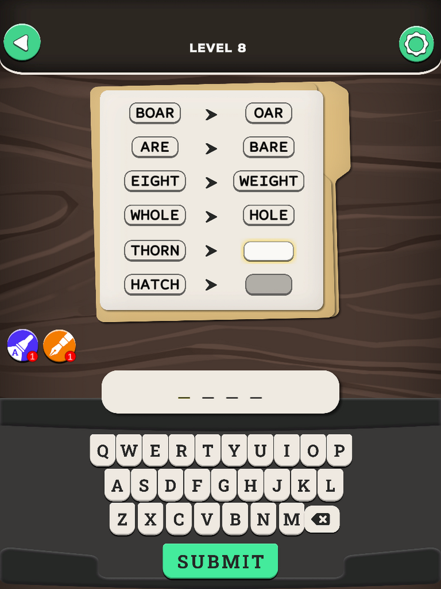
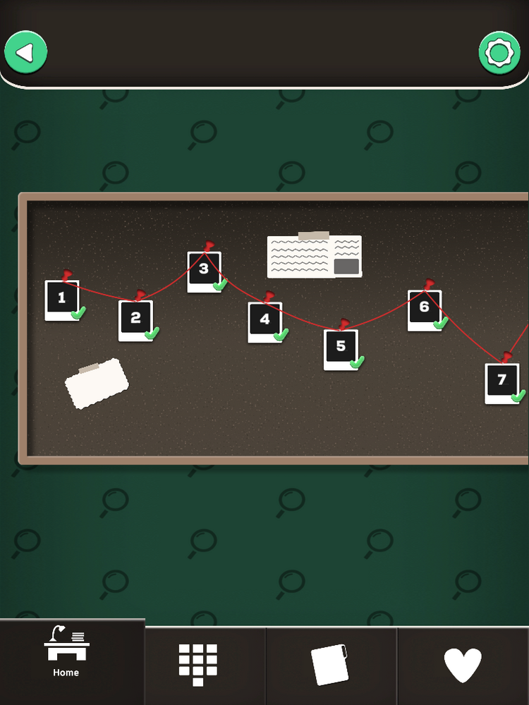
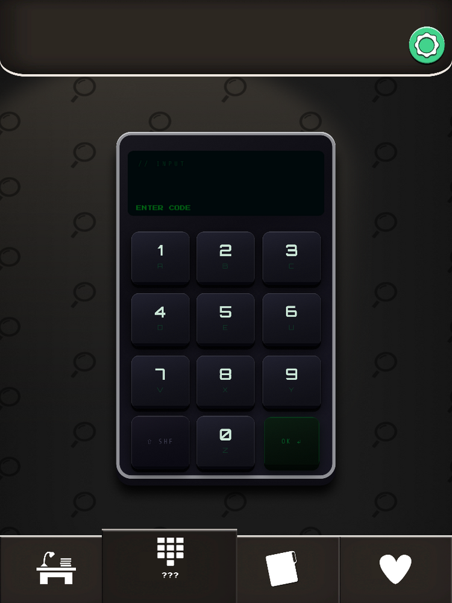

Phantom Index
A puzzle-mystery told through folders, files, and a keypad that doesn't forgive typos.
Phantom Index frames its puzzles as an interface rather than a traditional game board — folders, files, and a locked keypad standing in for a mystery you have to dig through by hand. The build was as much about making a UI feel unfriendly and glitchy on purpose as it was about the puzzle logic underneath.
Concept
The whole experience was designed to feel like using someone else's abandoned computer — a little unfriendly, a little glitchy, and rewarding to players who pay attention to detail rather than brute-force every screen.
Core Architecture
The project is built around a GlobalContext singleton that handles registration across systems, with Odin Inspector driving most of the ScriptableObjects in the project. Level data, node data, and story content all live as designer-editable assets instead of hardcoded values.
The Folder & Node System
The main puzzle structure supports up to five folders and 30 nodes per level. This went through a full refactor pass to fix load ordering, recursive chain solving so a solved node can cascade through dependent nodes, and scroll snapping normalized to a clean 0–1 range so snap behavior stayed consistent regardless of content length.
Files & Stories Screen
FileController drives the Files/Stories screen: horizontal scroll views with snap scrolling, dot indicators for position, tap-to-back guards so an accidental tap doesn't kick the player out mid-read, and persisted scroll position so returning to a file resumes where they left off.
The Keypad
The retro keypad is one of the most detail-heavy pieces of UI in the game — DOTween-driven glitch effects, procedural audio feedback, chromatic aberration, scanline overlays, and context-sensitive emoji/color states that react to correct versus incorrect entries. StoryController ties directly into it through a lock/unlock system, so story pages only open once the right code has been entered.
ColdCases Panel
A horizontal, snap-scrolling card carousel — also DOTween-driven — for browsing case files. Getting it to feel right took a few passes on drag forwarding, layout timing, and snap position normalization so cards settled cleanly instead of overshooting.
NodeView: The Pill UI
One of the trickier UI problems was the word-pair "pill" labels used throughout NodeView. Pills use 9-slice sprites and needed to resize based on actual rendered text width — solved with world-corner-based width measurement, a _maxPillWidth hard cap with a TextMeshPro auto-sizing fallback for anything that would overflow, and a one-frame deferred refit coroutine so labels never visibly popped after a text change.
Bug: Stale Text Animations
EasyTextEffect had a bug where stale character counts left text animations incomplete on level completion — the effect thought it had already finished animating characters that hadn't actually been revealed yet. Fixed by resetting the counter alongside the animation state instead of assuming the two would always stay in sync.
Shipping to WebGL
Getting Phantom Index onto itch.io surfaced a run of WebGL-specific problems:
- Save data vanishing between sessions — traced to
Application.persistentDataPathwriting into MEMFS, which never synced back to IndexedDB. A jslib +FS.syncfs()approach was tried first; the simpler, more reliable fix was switching toPlayerPrefs, which Unity guarantees is mounted beforeStart()runs. - WASM out-of-memory crashes and URP shader stripping — required trimming what shipped in the build and being more deliberate about which shader variants URP was allowed to strip.
- Large file download failures on itch.io's CDN — some build files were too large for reliable delivery through itch.io's own hosting.
- Unity 6 macro naming changes and a canvas search-ordering bug in
KeyboardClickEffect.csthat only showed up once deployed to WebGL, not in editor testing. - Cross-deploy save loss — eventually traced to itch.io's hashed CDN paths changing on every new deploy, orphaning browser storage tied to the old path. The fix was moving the live build to a stable hosting URL, with itch.io kept as a redirect rather than the primary host.
Reflections
Most of Phantom Index's difficulty wasn't the puzzle logic — it was making browser-based persistence and WebGL's stricter runtime behave as predictably as a native build. The lesson that stuck: never trust editor testing alone once WebGL-specific storage and memory behavior is involved.
More from the build


